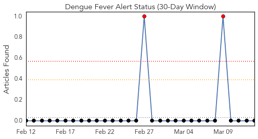
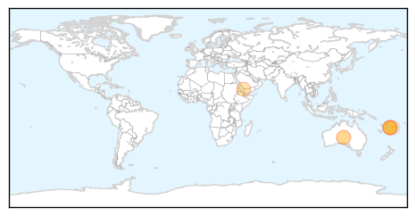
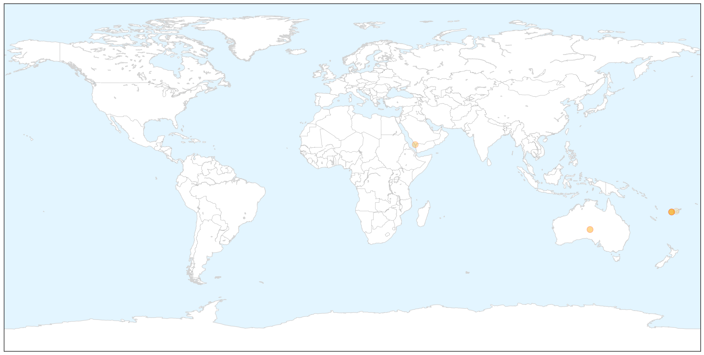
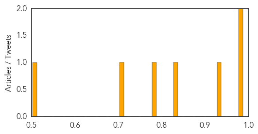
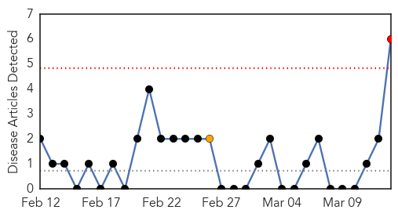
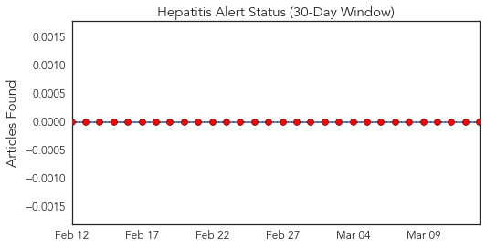
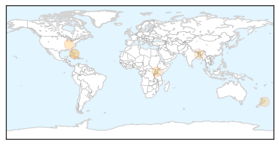
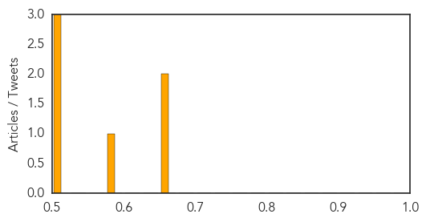

Dengue Fever
30-Day Web Trend
0 alerts, 0 warnings

30-Day Twitter Trend
1 alerts, 0 warnings

Article Locations

X

Article Confidences
Top Articles:
- 0.994
- Dengue outbreak kills 11 in Fiji
- 0.994
- Jeddah records 48 cases of dengue fever in two weeks
- 0.931
- National Campaign titled U & Me Against Dengue launched
- 0.830
- Australia assists Fiji to address Dengue Fever - Fiji
- 0.778
- AUSTRALIA ASSISTS FIJI TO ADDRESS DENGUE FEVER
- 0.704
- FBC News
- 0.514
- Red Cross deploys volunteers to fight dengue
Top Tweets:
-
No tweets found for Mar 13, 2014
Hepatitis
30-Day Web Trend
1 alerts, 1 warnings

30-Day Twitter Trend
0 alerts, 0 warnings

Article Locations
Article Confidences
Top Articles:
- 0.668
- NKY health officials concerned about hepatitis C linked to heroin use
- 0.657
- Are Virtual Doctors the Answer for Ugandan Health Care?
- 0.587
- Apples, peaches recalled in Hepatitis A scare
- 0.514
- Responding to the escalating impact of viral hepatitis in Asia Pacific
- 0.501
- New York hospital may have exposed patients to HIV and hepatitis from reused insulin pens
- 0.501
- New York hospital may have exposed patients to HIV and hepatitis from reused insulin pens
Top Tweets:
-
No tweets found for Mar 13, 2014